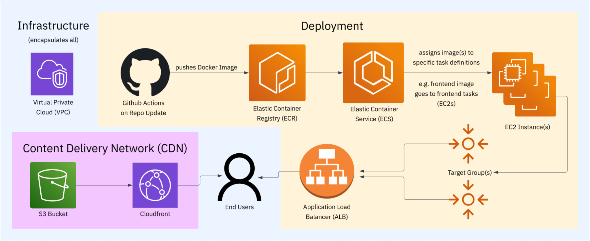

Introduction
Avon is a virtual learning environment designed for Computer Science. It allows lecturers to track the progress of their students through coursework using the Git version control system.
Features
- Fast and intuitive interface
- Modular, containerised architecture
- Integration with GitLab
- Automatically runs tests on submissions
- Analytics
Reflection on TB-1
After TB-1, we have identified some shortcomings in our project managagement strategy. For example, our work lacked structure, and we sometimes didn’t have everyone working on exactly one thing.
To remedy this situation, we have come up with the following improvements:
- Rotating project manager each week, that assigns tasks to people. Everyone has exactly one task in progress on the kanban.
- Every meeting, we update each other on the assigned task that we are working on, and every week we do a reflection on the feedback that we have received and add to documentation.
- Standardise PR review times, and ensure that we spend more time on PRs.
- We will use the Weekly Sprint feature on GitHub to link all issues to a weekly sprint with a unique number, and use this with the weekly schedule outlined previously.
Meeting minutes
Here you can find minutes for meetings.
03-01-2025 Extraordinary team meeting
Attendees
- Mihaly Toth-Tarsoly
- Josh Jenkins
- Jack Dempsey
- Hrushikesh Emkay
Key points
- Mihaly Toth-Tarsoly led the meeting.
- Mihaly presented the work completed so far on overhauling and refactoring the frontend and backend. It was agreed immediately that this should be quickly completed and merged in, and a meeting was set for Monday 5th January for the pull request to be merged.
- Mihaly also presented the work-in-progress documentation website.
- Discussion was held on potential improvements to the project-management workflow.
- Jack Dempsey updated the team on his work on updating tests. As this would conflict with the frontend updates, merging will be deferred until the big PR is merged.
- The way to model programmes, or unit groups was discussed.
Action items
| Person | Action item |
|---|---|
| Mihaly Toth-Tarsoly | Finish off the rewrite and submit PR |
| Hrushikesh Emkay | Research into potential integrations with GitLab |
| Jack Dempsey | Look at Mihaly’s branch and try to adapt tests |
08-01-2025 Extraordinary team meeting
Attendees
- Mihaly Toth-Tarsoly
- Josh Jenkins
- Jack Dempsey
- Hrushikesh Emkay
Key points
- Discussion was held on how to improve project management. We decided on having a weekly reflection on the feedback on weekly marking.
- PRs for the backend tests and fixing the dashboard were reviewed.
- We created issues for doing tests for all the other models, doing some research and CRUD operations like adding / deleting students from units from the interface.
Action items
| Person | Action item |
|---|---|
| Mihaly Toth-Tarsoly | Respond to feedback on the documentation website, submit for review. Pick one testing job and start work. |
| Hrushikesh Emkay | Pick one task from kanban and start work. |
| Jack Dempsey | Pick one task from kanban and start work. |
| Josh Jenkins | Pick one task from kanban and start work. |
| Yuxuan Wang | Pick one task from kanban and start work. |
Setting up a local dev environment
To set up a local dev environment, you will need to install a few tools. We use these to speed up development.
Just
The most important thing to use is Just. Just is a command runner, that allows us to speed up common tasks and scripts.
To install it, follow the relevant instructions for your platform. Once it is installed, you can issue just commands anywhere in the repository!
Some of the most useful just commands are tabulated below, although all commands can be listed using just --list:
| Command | Purpose |
|---|---|
just check | Runs linters |
just fixit | Fixes issues |
just run-fe | Runs the frontend |
just run-be | Runs the backend |
just test | Runs tests |
just sync | Download and install dependencies |
Please follow the rest of the instructions in this chapter to setup the tools for running the frontend and the backend.
Docker
Some of our workflows use Docker, because we containerise our platform. This means that you should install Docker or a Docker-compatible runtime, like Podman.
Environment variables
You need to set up environment variables for local development.
Create a .env.dev file in the backend folder, filling in the fields:
DATABASE_URL="sqlite:///../sqlite.db" # the location of the database to access (for local dev, share with frontend)
CORS_ORIGIN=["http://localhost:3000"] # the cors origins to allow
JWKS_URL="http://localhost:3000/api/auth/jwks" # jwk url that can be fetched from (get from frontend)
JWT_AUDIENCE="https://localhost:3000" # jwt audience, set in frontend
JWT_ISSUER="https://localhost:3000" # jwt issuer, from frontend
In the frontend folder, create a .env.development file:
NEXT_PUBLIC_API_URL=http://localhost:8000 # the url of the backend api
ENV=development # environment type
BETTER_AUTH_SECRET={RANDOM SECRET} # better auth secret to use
BETTER_AUTH_URL=https://localhost:3000 # better auth url to bind to
Frontend setup
The frontend runs on Next.js. This means that you will need a Typescript environment set up. Follow these instructions to get everything set up:
- Install a node version manager e.g.
nvm, so that you have access tonpmandnode. - Run
just syncto download and install dependencies - Ensure you have set up the environment variables
- Run
just run-feto start up the frontend
Backend setup
The backend runs on FastAPI. To install everything:
- Install uv. This is a Python project manager
- Run
just syncto download and install dependencies (if you have not already done so) - Setup the environment variables
- Run
ENV=dev just run-beto start up the backend.
mdBook setup
The documentation website uses mdBook. If you wish to build the book locally for testing purposes, you must download it using the instructions here.
If you have a Rust toolchain installed, use cargo install mdbook. If you have homebrew, brew install mdbook will work. Otherwise, you can get binaries for your platform here.
After installation, use just serve-book to open it.
Dev workflow
Please follow the steps in this chapter to learn how to contribute to Avon.
Making issues
The first step of any contribution is the creation of an issue on the Main Kanban. You should use the templates provided and provide details about your feature, why it should be included. The same goes for bugs as well. You should use the labels to make sure that it is properly categorised.
If you are going to be working on the issue immediately, you should assign it to yourself, so that nobody else starts working on it.
Making branches
Once you’ve created your issue, you should create a linked branch. This will connect all the work you do to the issue. Name your branch something sensible, the convention we use is two or three words connected with hyphens, like this: my-awesome-feature.
Once created, you should use git fetch origin to update your local repo and git checkout BRANCH_NAME to change to your new branch. You’re now ready to start work. Make sure to git commit regularly, and run just check and just fixit to make sure you are complying with code style requirements.
Pull requests
Once you’ve finished working on your change, you need to create a Pull Request. This allows the team to check your work and improve upon it.
Pull requests also ensure that any code being merged has complies with the repository style requirements, and that the tests pass. In your Pull Request, detail the changes you have made, and go through the checklist on the PR template. You should fill out the labels on the PR, and assign it to 2025ContinuousAssessment.
You must also ensure that the pull request is linked to the issue. The PR template will guide you on how to do this.
When the pull request is merged, your linked issue will automatically be closed. Well done!
Deployment
Avon will be deployed on AWS. We use a S3 bucket as the CDN and the compute runs on ECS.
Each part of the application (frontend, backend) are containerised separately. They register their presence with an ALB for the frontend and backend respectively. This means that we can easily scale the deployment to many containers, and the ALBs handle routing to one of the containers.
We plan to use a hosted PostgreSQL database on RDS. In order to deploy, the environment variables controlling the CDN path, CORS origins etc. should be properly set.
On Git pushes to main, GitHub will automatically build the Docker images and push them to ECR, before registering a new ECS task and applying it to the cluster. More information can be found in CI/CD.

Testing
Currently, Avon only has tests for the backend. This may change in the future, but for now, the only testing framework used is Pytest.
The testing works by setting up an in-memory sqlite database, so any tests performed have no effect. The application is mocked using routines provided by FastAPI.
To run tests, use just test.
CI/CD
Avon has several CI/CD pipelines set up.
Pull requests
Before a pull request can be merged, code quality checks must pass. The frontend uses the Biome linter, and the backend uses Ruff. In addition, tests are also run to make sure that they pass. Further, we have a PR labeller set up so that PRs are automatically labelled with the areas that they touch.
Deployment
On merges into main, GitHub will automatically build a docker image, publish to ECR and update the task manifests.